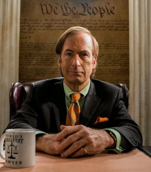
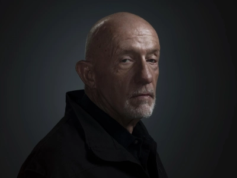
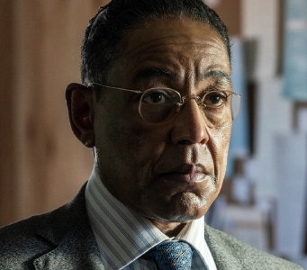
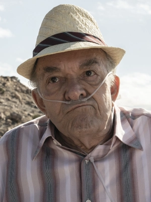
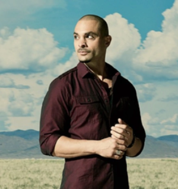

Jimmy McGill es un abogado con buenas intenciones pero que termina cayendo en la corrupción y en el camino fácil. En Better Call Saul conocemos su origen, sus intentos de ser respetado y cómo poco a poco se transforma en Saul Goodman, el abogado criminal de Breaking Bad. Su evolución muestra cómo un hombre común termina adoptando una identidad completamente diferente.

Mike es un expolicía que empieza trabajando como investigador privado y “solucionador de problemas” para Jimmy. En Better Call Saul vemos su lado más humano, sobre todo con su nieta Kaylee, pero también su transformación en el hombre implacable que ya conocíamos en Breaking Bad. Su relación con Gus Fring comienza en esta precuela.

Uno de los personajes más icónicos del universo. En Better Call Saul conocemos cómo consolidó su imperio, su enfrentamiento con los Salamanca y su perfeccionismo como empresario. Su guerra silenciosa contra Héctor Salamanca es central en la precuela. En Breaking Bad, se convierte en el principal antagonista de Walter White.

En Better Call Saul vemos a Héctor en plena actividad, manejando el negocio familiar con brutalidad. Tras un atentado, queda postrado en silla de ruedas y dependiendo de un timbre para comunicarse, tal como lo vemos en Breaking Bad. Su enemistad con Gus es uno de los ejes centrales de ambas series.

Personaje exclusivo de Better Call Saul. Aunque no aparece en Breaking Bad, su historia se entrelaza con los Salamanca y con Gus, mostrando cómo alguien atrapado en el mundo del crimen intenta escapar sin éxito. Su ausencia en Breaking Bad genera mucho interés sobre su destino.